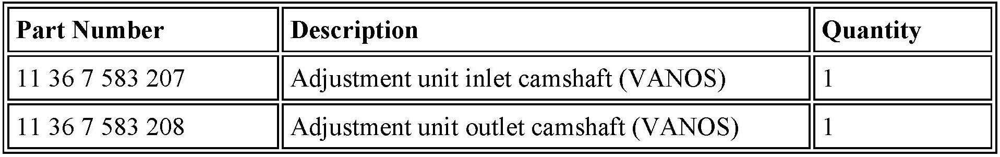
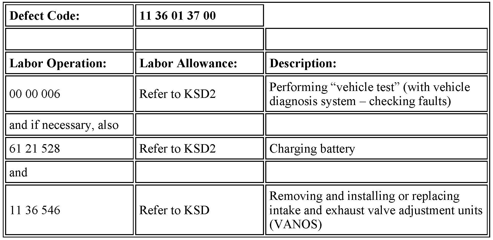

Engine Controls - Camshaft Position/VANOS DTC's, MIL ON
SI B12 14 12Engine Electrical Systems
April 2013
Technical Service
This Service Information bulletin supersedes SI B12 14 12 dated January 2013.
[NEW] designates changes to this revision
SUBJECT
N51, N52K, N52T and N55 Engine: Various Faults Stored in DME Related to VANOS and Camshaft Position
MODEL
E70 produced from 2/2010 to 12/2010 E71 produced from 2/2010 to 12/2010
[NEW] E82 and E88 produced from 2/2010 to 12/2010
[NEW] E90, E91, E92 and E93 produced from 2/2010 to 12/2010
F07 535i produced from 2/2010 to 12/2010
F10 535i produced from 2/2010 to 12/2010
[NEW] F12 and F13 produced from 2/2010 to 12/2010 F25 produced from 2/2010 to 12/2010
SITUATION
A rattling noise can be heard from the engine compartment; the engine has a loss of power; and the Service Engine Soon lamp is illuminated. One or more of the following faults may be stored.
E70, E71, E82, E88, E90, E92 and E93:
2D5A - VANOS, intake: control fault, camshaft sticking
2D5B - VANOS, intake: control fault, position not reached
2D60 - VANOS, exhaust: control fault, camshaft sticking
2D61 - VANOS, exhaust: control fault, position not reached
2D9F - Camshaft input sensor: signal implausible
2DA1 - Camshaft exhaust sensor: signal implausible
300C - Camshaft input sensor: signal high
300D - Camshaft input sensor: signal low
300E - Camshaft exhaust sensor: signal high
300F - Camshaft exhaust sensor: signal low
F07, F10, F12, F13 and F25:
130104 - VANOS, intake: control fault, camshaft sticking
130108 - VANOS, intake: control fault, position not reached
130304 - VANOS, exhaust: control fault, camshaft sticking
130308 - VANOS, exhaust: control fault, position not reached
130E11 - Camshaft input sensor: signal implausible
130F11 - Camshaft exhaust sensor: signal implausible
164020 - Camshaft input sensor: signal high
164021 - Camshaft input sensor: signal low
164030 - Camshaft exhaust sensor: signal high
164031 - Camshaft exhaust sensor: signal low
CAUSE
One or both (intake and/or exhaust) of the VANOS gear assemblies have failed; the attaching bolts may have also loosened and/or broken.
PROCEDURE
1. Replace both VANOS gear assemblies. Refer to Repair Instruction 11 36 046, "Removing and installing or replacing intake and exhaust camshaft units."
2. If the bolts have been found broken, the missing portions of the bolts will need to be retrieved from the engine before the final repairs are made. This additional work may include removing the engine oil pan, and a close examination of the timing chain drive to retrieve the missing parts. Refer to the applicable repair instructions for oil pan removal procedures.
Replacement of the parts described in the bulletin does not require TeileClearing Authorization.

PARTS INFORMATION
Refer to ETK for additional bolts and gaskets.

WARRANTY INFORMATION
Covered under the terms of the BMW New Car/SAV Limited Warranty or the BMW Certified Pre-Owned Program.
Specific eligible repairs may also be covered by the terms of the Federal, State or BMW Emissions Warranty.
To determine if any applicable Federal, State or BMW Emissions Warranty coverage applies prior to performing repairs, please see SI B01 02 11 for "Emissions Warranty Coverage" and refer to the "Glossary of Emission Coverage" attachment for more information.
The BMW Certified Pre-Owned Limited Warranty applies to BMW CPO vehicles that are still within the BMW Certified Pre-Owned Limited Warranty, but beyond Emissions Warranty coverage that applies.
Labor operation code 00 00 006 is a Main labor operation. If you are using a Main labor code for another repair, use the Plus code labor operation 00 00 556 instead;
Refer to KSD2 for the corresponding flat rate unit (FRU) allowance. Enter the Chassis Number, which consists of the last 7 digits of the Vehicle Identification Number (VIN). Click on the "Search" button, and then enter the applicable flat rate labor operation in the FR code field.
Other Repairs
As outlined in the Procedure section, if other eligible and covered consequential work is required, claim this work under the defect code listed above with the applicable labor operations listed in KSD2.